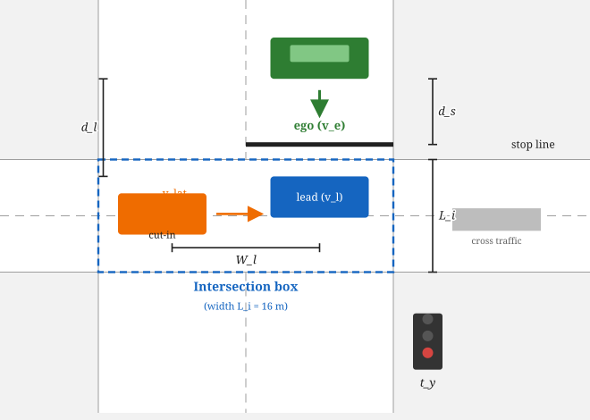
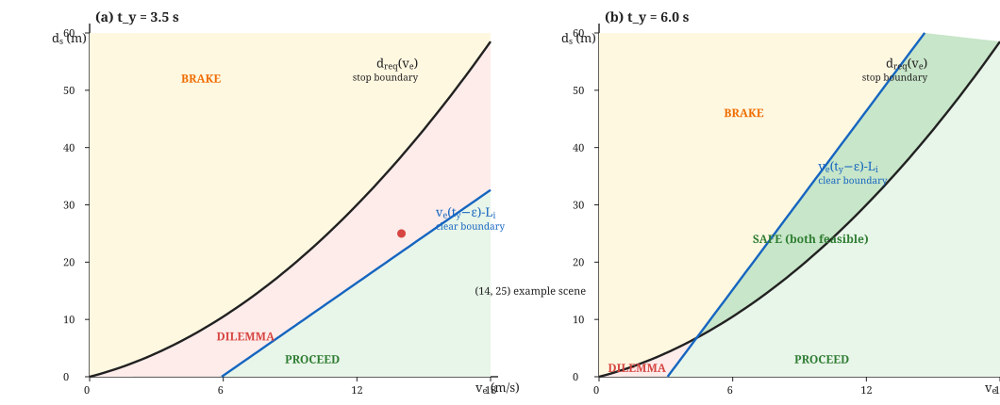
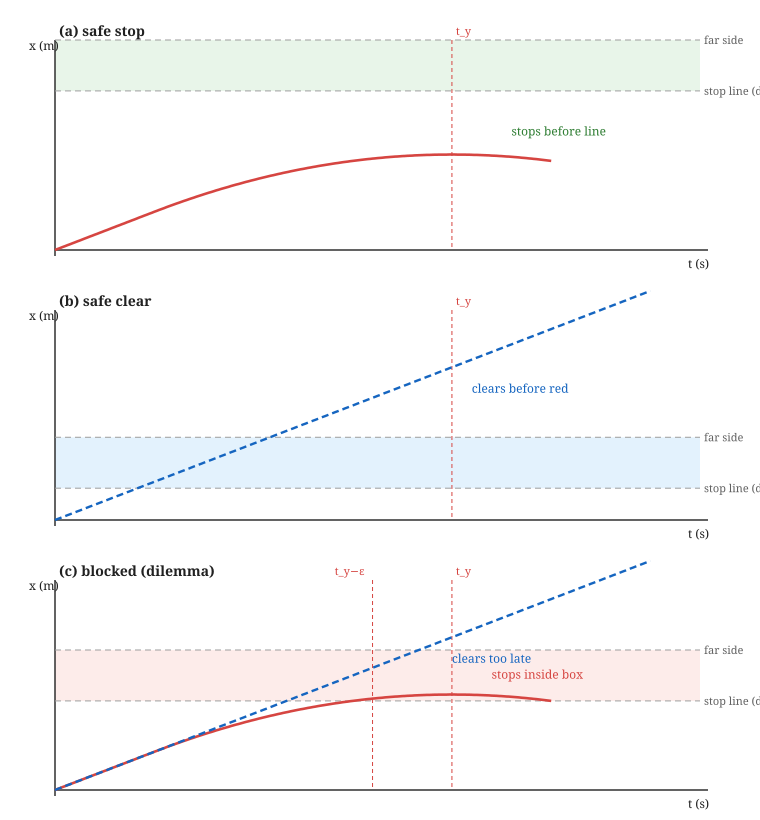
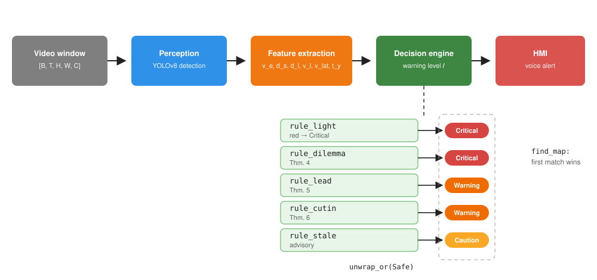

This paper addresses the problem of predicting whether a vehicle will become blocked inside an intersection when approaching a stale green or yellow traffic signal. Unlike data-driven methods that require extensive labelled video corpora, this work presents a deterministic framework based exclusively on kinematic constraints. The system ingests a sliding window of video frames from a forward-facing camera, applies object detection to obtain physical measurements, and evaluates five formally derived criteria. Each criterion is expressed as a theorem with a constructive proof; the complete formal development is given in the Proofs Appendix. The implementation is written in idiomatic Rust, adhering to SOLID principles, utilising exhaustive pattern matching, and requiring zero external dependencies for its core logic. The decision pipeline is a severity-ordered composition of single-responsibility rules evaluated with $O(n)$ complexity per frame. The system operates in real time, is fully interpretable, and is suitable for deployment in ISO 26262-compliant automotive systems.
Index terms — intersection blockage, dilemma zone, kinematic safety, driver assistance, deterministic decision making, Rust, formal verification
Intersection collisions account for a significant fraction of urban traffic incidents, and a large class of these incidents originates from the “blocked box” scenario: a vehicle enters an intersection on a stale green or yellow signal, cannot clear before the opposing flow begins, and subsequently obstructs cross traffic or collides with it. Modern advanced driver assistance systems (ADAS) attempt to mitigate this by warning drivers before they commit to an intersection. However, the prevailing paradigm relies on end-to-end deep learning trained on hundreds of hours of manually annotated video. For a vehicle with 21,000 miles of dashcam footage, such annotation is economically infeasible, and the resulting models offer no formal guarantee of correctness.
This paper proposes an alternative: a mathematically grounded, zero-training system. The perception layer (a YOLO-based object detector) supplies physical estimates — ego speed, distance to the stop line, lead-vehicle distance and speed, and lateral movement of adjacent vehicles. The decision layer then applies the equations of motion to determine whether a safe stop or a safe clearance is possible within the remaining time before the signal turns red. Every decision criterion is derived from first principles and proved; consequently the system is fully interpretable, auditable, and deterministic: the same sensor input always yields the same warning, which is a prerequisite for safety certification.
The principal contributions are:
The dilemma zone was first analysed by Gazis et al. [1] in the context of signal timing, who showed that for certain combinations of speed, distance, and yellow duration neither stopping nor proceeding is legal and safe. Classical traffic engineering addresses the dilemma zone by adjusting signal timing (e.g., all-red clearance intervals) rather than by in-vehicle warning. This work inverts the problem: given a fixed signal, warn the driver about the impending blockage.
In the vehicle safety literature, Shalev-Shwartz et al. [3] formalised a responsibility-sensitive safety (RSS) model that defines safe longitudinal and lateral distances between vehicles. The present work adopts a similar philosophy — safety as an explicit, checkable predicate — but specialises it to the intersection-crossing manoeuvre and grounds it in the traffic-signal timing rather than in inter-vehicle distance alone.
End-to-end learning approaches to intersection behaviour [4] predict occupancy or intention from raw video. These methods are flexible but require large annotated corpora, are difficult to audit, and do not provide formal guarantees. Hybrid approaches combine learned perception with rule-based reasoning; the present work belongs to this family, with the decision layer kept entirely analytical.
Finally, the use of the Rust language for safety-critical embedded software is well established [5]; its ownership model eliminates data races, and its exhaustive pattern matching forces explicit handling of all sensor states, which aligns with the verification requirements of ISO 26262 [6].
Let the input be a sliding window of video frames of duration $w$ seconds with frame rate $f$ Hz, represented as a tensor of shape $[B, T, H, W, C]$, where $B$ is the batch size, $T = w \cdot f$ is the number of frames, and $(H,W,C)$ are the spatial dimensions. The decision variable is a discrete warning level $\ell \in \{\textsc{Safe}, \textsc{Caution}, \textsc{Warning}, \textsc{Critical}\}$.
| Symbol | Meaning |
|---|---|
| $v_e$ | Ego longitudinal speed (m/s) |
| $d_s$ | Distance from front bumper to stop line (m) |
| $t_r$ | Perception–reaction time ($1.0$ s) |
| $a_b$ | Maximum braking deceleration ($4.0$ m/s$^2$) |
| $d_{\mathrm{req}}(v_e)$ | Required stopping distance (m) |
| $L_i$ | Intersection width ($16$ m) |
| $t_y$ | Time until the signal turns red (s) |
| $\epsilon$ | Clearance safety margin ($0.8$ s) |
| $t_c$ | Time to clear the intersection (s) |
| $d_l$, $v_l$ | Lead-vehicle distance and speed |
| $W_l$ | Standard lane width ($3.5$ m) |
| $v_{\mathrm{lat}}$ | Lateral speed of an adjacent vehicle |
| $t_i$ | Time until lane intrusion |
We adopt the following precise vocabulary.
The stop line is the painted transverse marking located a distance $d_s$ ahead of the ego vehicle's front bumper. Crossing it after the onset of the red phase is a traffic violation.
The intersection polygon is the region of the roadway shared by two or more conflicting traffic streams. Its longitudinal extent for the ego stream is $L_i$.
The ego vehicle is blocked if it occupies the intersection polygon at any time $t \geq t_y - \epsilon$; equivalently, if $\exists\, t \geq t_y - \epsilon$ such that its longitudinal position $x_{\mathrm{ego}}(t) \in [d_s,\, d_s + L_i]$.
A safe stop is a braking manoeuvre that brings the ego vehicle to rest strictly before the stop line: $x_{\mathrm{ego}}(t) < d_s$ for all $t$ and $\lim_{t\to\infty} v_{\mathrm{ego}}(t) = 0$.
A safe clearance is a manoeuvre that carries the ego vehicle's rear bumper past the far side of the intersection before $t = t_y - \epsilon$: $x_{\mathrm{ego}}(t_y - \epsilon) \geq d_s + L_i$.
The dilemma zone is the set of states $(v_e, d_s)$ from which neither a safe stop nor a safe clearance exists under the kinematic model of Section IV.
The system operates under the following assumptions.
Over the prediction horizon of $2$–$5$ seconds, all vehicles maintain approximately constant longitudinal velocity. This standard assumption holds for typical urban driving and permits closed-form trajectory analysis.
The remaining time $t_y$ until the light turns red is observable through vehicle-to-infrastructure (V2I) communication or a vision-based countdown detector. In its absence, a heuristic based on the nominal green duration is used.
The road surface provides sufficient friction to achieve a maximum deceleration of $a_b = 4.0$ m/s$^2$, corresponding to a comfortable emergency brake.
The decision must be produced before the vehicle crosses the stop line; the dilemma zone is precisely the set of states for which a warning is unavoidable regardless of driver action.
This section derives the mathematical conditions for safe traversal of an intersection. Each result is stated as a theorem; full proofs appear in the Proofs Appendix, and the main text provides intuition and proof sketches. Figure 1 depicts the scene geometry.

The minimum distance required to bring the ego vehicle to a complete halt is derived from the fundamental kinematic equation $v_f^2 = v_i^2 + 2ad$. Setting the final velocity $v_f = 0$ and incorporating a fixed perception–reaction time $t_r$ yields:
Intuition. Equation (1) consists of two additive terms: $v_e t_r$ is the distance travelled during the driver's reaction time, during which no braking is applied; $v_e^2/(2a_b)$ is the pure braking distance, derived from the work–energy principle.
Under Assumptions 1–3, the minimum distance within which the ego vehicle can be brought to rest, measured from the instant of decision, is $d_{\mathrm{req}}(v_e) = v_e t_r + v_e^2/(2a_b)$.
Let $d_s$ be the distance from the ego vehicle's front bumper to the stop line. A safe stop (Definition 4) is physically possible if and only if $d_s > d_{\mathrm{req}}(v_e)$.
The trajectory of the ego under maximum deceleration is $x(t) = v_e t - \tfrac{1}{2} a_b t^2$ for $t \geq t_r$, and the stopping time is $t_r + v_e/a_b$; the distance travelled by this time is exactly $d_{\mathrm{req}}(v_e)$. If $d_s \leq d_{\mathrm{req}}(v_e)$, the vehicle crosses the line at positive speed for every admissible braking profile, so no safe stop exists. Conversely, if $d_s > d_{\mathrm{req}}(v_e)$, maximum braking halts the vehicle strictly before the line, and the continuity of the position in the braking magnitude (intermediate-value argument, Lemma A.3) guarantees a profile that stops exactly at the line.
□$d_{\mathrm{req}}$ is strictly increasing in $v_e$, since $\partial d_{\mathrm{req}}/\partial v_e = t_r + v_e/a_b > 0$. Higher approach speeds strictly enlarge the stopping envelope.
If the ego chooses to proceed, it must completely vacate the intersection before the signal turns red. The clearance time under the constant-velocity policy of Assumption 1 is:
Intuition. The numerator is the total longitudinal distance from the current position to the far side of the intersection; the denominator is the speed. Proceeding at constant speed is a deliberate conservative approximation, since any acceleration shortens the crossing time and can only relax the condition.
Let $\epsilon > 0$ be the safety margin. Under the constant-velocity policy, the ego vehicle can clear the intersection before the red phase if and only if $t_c(v_e, d_s) < t_y - \epsilon$.
Necessity: if $t_c \geq t_y - \epsilon$, the constant-speed trajectory reaches the far boundary no earlier than $t_y - \epsilon$, so it cannot exit before the red phase. Sufficiency: if $t_c < t_y - \epsilon$, the far boundary is reached strictly before $t_y - \epsilon$, which itself precedes $t_y$; the vehicle exits with margin $\epsilon$ to spare. The margin guarantees that cross traffic has not yet entered the box.
□Under Assumption 1 the constant-velocity policy is the only admissible policy, so the criterion is exact within the model. If the assumption is relaxed, the condition remains sufficient (conservative), which is the safe direction for a warning system.
The dilemma zone is the critical state in which neither stopping nor clearing is possible. This is the primary scenario for which a warning must be issued.
A CRITICAL warning is necessary and sufficient if and only if:
Intuition. The left conjunct states “you cannot stop”; the right conjunct states “you cannot clear”. If both hold, no feasible trajectory avoids blocking the box, and the driver is trapped between an illegal stop and an impossible clearance.
Sufficiency. Assume both conjuncts. By Theorem 2, no braking trajectory stops before the line; by Theorem 3, no constant-speed trajectory clears before the red phase. Under Assumption 1 these are the only manoeuvre classes, so every admissible trajectory either crosses the line at positive speed or occupies the box at $t_y - \epsilon$; in both cases the vehicle is blocked (Definition 3). Necessity. If blockage is unavoidable, a safe stop is impossible (otherwise stopping avoids blockage), hence $d_s \leq d_{\mathrm{req}}(v_e)$; and a safe clearance is impossible (otherwise clearing avoids blockage), hence $t_c \geq t_y - \epsilon$.
□For the constants of Table I and $t_y = 3.5$ s, the dilemma zone is non-empty for every speed $v_e \in (0, \infty)$, because $d_{\mathrm{req}}(v_e) > v_e(t_y - \epsilon) - L_i$ for all $v_e$ (the quadratic $v_e^2/8 - 1.7v_e + 16$ has negative discriminant). Consequently, at least one warning-relevant state exists for every approach speed; see Figure 2.

Figure 3 shows the three canonical outcomes for an ego vehicle at $v_e = 12$ m/s. When the stop line is far ($d_s = 50$ m), braking halts the vehicle before the line; when it is close ($d_s = 10$ m), constant speed clears the box before the red phase; when it is intermediate ($d_s = 28$ m), neither braking (the vehicle stops inside the box) nor proceeding (the box is not cleared before the margin) succeeds, and the vehicle is blocked — the dilemma zone in action.

A slower leading vehicle imposes an upper bound on the ego's effective speed: the ego cannot pass the leader, so the time to clear the intersection is governed by the leader's motion.
Given a lead vehicle at distance $d_l$ with speed $v_l$, the effective clearance time is $$t_c^{\mathrm{eff}} = \frac{d_l + L_i}{v_l + \delta} \tag{4}$$ where $\delta$ is a small positive constant that prevents division by zero.
If $t_c^{\mathrm{eff}} \geq t_y - \epsilon$ and $d_l < d_{\mathrm{req}}(v_e)$, the ego vehicle will become trapped behind the leader and block the intersection.
Intuition. Even if the ego has sufficient speed to clear the intersection alone, the leader's slow speed acts as a moving blockage. The ego must follow at the leader's speed; if the leader has not cleared the box by the time the light turns red, the ego is stuck directly behind it, still inside the box.
The ego's longitudinal position is constrained by the collision-avoidance requirement $x_{\mathrm{ego}}(t) < x_{\mathrm{lead}}(t)$. The earliest time at which the ego can reach the far side of the box is when the leader has cleared it, which requires $t = t_c^{\mathrm{eff}}$. If $t_c^{\mathrm{eff}} \geq t_y - \epsilon$, the leader still occupies the box at the red phase and so does the ego. The second condition $d_l < d_{\mathrm{req}}(v_e)$ rules out aborting: the ego cannot stop behind the leader, because the gap is smaller than its stopping distance. Hence blockage is unavoidable.
□Adjacent vehicles that signal and move laterally into the ego's lane reduce the available stopping distance and invalidate the previously computed geometry.
Let $v_{\mathrm{lat}}$ be the lateral speed of an adjacent vehicle. The time for it to cross into the ego's lane is $$t_i = \frac{W_l}{|v_{\mathrm{lat}}|} \tag{5}$$ where $W_l = 3.5$ m is the standard lane width.
Let $d_a$ be the distance to an adjacent vehicle with an active turn signal. If $t_i < t_y$ and $d_a < d_{\mathrm{req}}(v_e)$, then the ego must issue a warning.
Intuition. The adjacent vehicle will intrude into the ego's path before the light changes, effectively creating a new, closer lead vehicle. The ego's previously computed stopping distance is then invalid; the new stopping requirement cannot be met, making a collision or blockage imminent.
If $t_i < t_y$, the lane change occurs before the signal transition. At the moment of intrusion the longitudinal gap becomes $d_a$, and since $d_a < d_{\mathrm{req}}(v_e)$ the ego cannot stop before reaching the cutting vehicle. If the ego brakes, it either stops beyond the stop line or collides; if it proceeds, it must clear the box while the intruder occupies the lane. In either case the kinematic constraints are violated, so a warning is required.
□Two operational rules complete the criterion set. First, an observed red signal makes blockage imminent by definition and must produce a CRITICAL warning. A yellow signal with $t_y < 2.5$ s leaves insufficient time for a safe stop in most traffic and produces a CAUTION. Second, a stale-green heuristic issues a CAUTION when the green phase has been active long enough that the driver should prepare for a possible transition while still at a distance $d_s > d_{\mathrm{req}}(v_e)$ (i.e., while stopping remains feasible). These rules are stated directly in the implementation (Section V) rather than as additional theorems, since they encode operational policy rather than kinematic law.
The implementation is structured into four modules, each adhering to the Single Responsibility Principle (SRP). The decision engine is a functional pipeline that composes five independent checkers in descending severity order (Figure 4).

models.rsThis module defines immutable data structures and exhaustive enums. All types are copy-able and side-effect free.
//! Core data types representing the state of the traffic scene. //! All types are immutable; transformations produce new instances. /// The current colour of the traffic light. #[derive(Debug, Clone, Copy, PartialEq, Eq)] pub enum LightState { Red, Yellow, Green, Unknown, // Sensor failure. } /// Lane position relative to the ego vehicle. #[derive(Debug, Clone, Copy, PartialEq, Eq)] pub enum LanePosition { Same, Left, Right, Unknown, } /// The severity of the warning issued to the driver. #[derive(Debug, Clone, Copy, PartialEq, Eq, PartialOrd, Ord)] pub enum WarningLevel { Safe, Caution, Warning, Critical, } /// A tracked object from the perception pipeline. #[derive(Debug, Clone)] pub struct Detection { pub bbox: (f32, f32, f32, f32), pub class_id: u8, pub speed: f32, pub lateral_speed: f32, pub distance_to_ego: f32, pub lane: LanePosition, pub turn_signal_active: bool, } impl Detection { /// Returns `true` if the detection belongs to a vehicle class. #[must_use] pub fn is_vehicle(&self) -> bool { matches!(self.class_id, 2 | 3 | 5 | 7) } } /// State of the ego vehicle. #[derive(Debug, Clone, Copy)] pub struct EgoState { pub speed: f32, pub distance_to_stop_line: f32, } /// Derived state of the closest lead vehicle. #[derive(Debug, Clone, Copy)] pub struct LeadVehicle { pub distance: f32, pub speed: f32, pub is_in_intersection: bool, }
algebra.rsThis module contains only pure functions implementing the kinematic equations of Section IV. No decision logic is present.
//! Pure algebraic functions for kinematic calculations. //! These are stateless, deterministic, and side-effect-free. /// Physical constants derived from automotive safety standards. pub mod constants { /// Maximum comfortable deceleration (m/s^2). pub const MAX_DECEL: f32 = 4.0; /// Perception-reaction time (seconds). pub const REACTION_TIME: f32 = 1.0; /// Standard intersection width for two lanes (meters). pub const INTERSECTION_LENGTH: f32 = 16.0; /// Safety margin to guarantee red phase clearance (seconds). pub const SAFETY_MARGIN: f32 = 0.8; /// Small epsilon to prevent division by zero. pub const EPSILON: f32 = 0.1; /// Standard lane width for cut-in calculations (meters). pub const LANE_WIDTH: f32 = 3.5; } /// Computes the minimum stopping distance (Eq. 1). /// /// # Derivation /// From `v_f^2 = v_i^2 + 2*a*d`, with `v_f = 0` and `a = -MAX_DECEL`, /// we obtain `d_brake = v^2 / (2 * MAX_DECEL)`. Adding the reaction /// distance `v * REACTION_TIME` yields the total. /// /// # Arguments /// * `ego_speed` - Current longitudinal velocity (m/s). /// /// # Returns /// The distance (m) required to achieve a full stop. #[must_use] pub fn stopping_distance(ego_speed: f32) -> f32 { let reaction_dist = ego_speed * constants::REACTION_TIME; let braking_dist = (ego_speed * ego_speed) / (2.0 * constants::MAX_DECEL); reaction_dist + braking_dist } /// Computes the time to clear the intersection (Eq. 2). /// /// # Arguments /// * `distance_to_line` - Distance from front bumper to the stop line (m). /// * `speed` - Current longitudinal velocity (m/s). /// /// # Returns /// The time (s) required to reach the far side of the intersection. #[must_use] pub fn clearance_time(distance_to_line: f32, speed: f32) -> f32 { let denominator = speed + constants::EPSILON; (distance_to_line + constants::INTERSECTION_LENGTH) / denominator } /// Computes the time for an adjacent vehicle to intrude into the ego lane /// (Eq. 4). /// /// # Arguments /// * `lateral_speed` - The lateral velocity of the adjacent vehicle (m/s). /// /// # Returns /// The time (s) until the lane boundary is crossed. #[must_use] pub fn intrusion_time(lateral_speed: f32) -> f32 { constants::LANE_WIDTH / (lateral_speed.abs() + constants::EPSILON) }
rules.rsThis module contains five single-responsibility functions. Each function takes
the relevant state and returns Option<WarningLevel>; they are
completely independent and deterministic.
//! Decision rules. Each function implements one criterion of //! Section 4. All functions are pure and return `Option` to //! facilitate composition. use crate::algebra::*; use crate::models::*; /// Rule 1 (Section 4.6): Light state rule. /// Red implies Critical; short yellow implies Caution. #[must_use] pub fn rule_light(light: LightState, time_to_red: f32) -> Option<WarningLevel> { match light { LightState::Red => Some(WarningLevel::Critical), LightState::Yellow if time_to_red < 2.5 => Some(WarningLevel::Caution), _ => None, } } /// Rule 2 (Theorem 4): Dilemma zone rule. /// The core stopping-clearance conjunction. #[must_use] pub fn rule_dilemma(ego: &EgoState, time_to_red: f32) -> Option<WarningLevel> { let d_req = stopping_distance(ego.speed); let t_c = clearance_time(ego.distance_to_stop_line, ego.speed); let cannot_stop = ego.distance_to_stop_line <= d_req; let cannot_clear = t_c >= (time_to_red - constants::SAFETY_MARGIN); match (cannot_stop, cannot_clear) { (true, true) => Some(WarningLevel::Critical), _ => None, } } /// Rule 3 (Theorem 5): Lead vehicle rule. /// Checks if the leader is stopped in the box or if following it /// causes a clearance failure. #[must_use] pub fn rule_lead(ego_speed: f32, lead: &LeadVehicle, time_to_red: f32) -> Option<WarningLevel> { let d_req = stopping_distance(ego_speed); // Sub-rule 3a: leader is stopped and already inside the intersection. if lead.speed < 1.0 && lead.distance < d_req && lead.is_in_intersection { return Some(WarningLevel::Critical); } // Sub-rule 3b: following the leader causes a clearance failure. let t_eff = clearance_time(lead.distance, lead.speed); if t_eff >= (time_to_red - constants::SAFETY_MARGIN) && lead.distance < d_req { return Some(WarningLevel::Warning); } None } /// Rule 4 (Theorem 6): Cut-in rule. /// Detects adjacent vehicles with turn signals that will intrude /// before the light changes. #[must_use] pub fn rule_cutin(detections: &[Detection], ego_speed: f32, time_to_red: f32) -> Option<WarningLevel> { let d_req = stopping_distance(ego_speed); detections .iter() .filter(|d| d.is_vehicle() && d.turn_signal_active && d.lane != LanePosition::Same) .find(|d| { let t_intrude = intrusion_time(d.lateral_speed); t_intrude < time_to_red && d.distance_to_ego < d_req }) .map(|_| WarningLevel::Warning) } /// Rule 5 (Section 4.6): Stale-green heuristic. /// Advises Caution when the green has been active long enough. #[must_use] pub fn rule_stale(light: LightState, ego: &EgoState) -> Option<WarningLevel> { match light { LightState::Green if ego.distance_to_stop_line > stopping_distance(ego.speed) => { Some(WarningLevel::Caution) } _ => None, } }
decision.rsThe orchestrator composes the rules using a functional pipeline (Figure 4). The pipeline is deliberately ordered by descending severity so that the first matching rule is always the most urgent one.
//! Decision engine pipeline. Composes five rules. //! Adding a new rule requires inserting it into the vector. use crate::algebra::constants; use crate::models::*; use crate::rules::*; /// Evaluates the entire traffic scene and returns the highest-priority /// warning. /// /// # Pipeline design /// Rules are ordered by descending severity: red light and the dilemma /// zone (Critical) precede the lead and cut-in rules (Warning), which /// precede the stale-green heuristic (Caution). `find_map` returns the /// first rule that fires; `unwrap_or(Safe)` covers the no-warning case. #[must_use] pub fn evaluate_safety( ego: &EgoState, detections: &[Detection], light: LightState, time_to_red: f32, ) -> WarningLevel { // Extract the lead vehicle from detections. let lead_opt = detections .iter() .find(|d| d.is_vehicle() && d.lane == LanePosition::Same) .map(|d| LeadVehicle { distance: d.distance_to_ego, speed: d.speed, is_in_intersection: d.distance_to_ego < constants::INTERSECTION_LENGTH, }); // Build the severity-ordered pipeline. let rules: Vec<Box<dyn Fn() -> Option<WarningLevel>>> = vec![ Box::new(|| rule_light(light, time_to_red)), Box::new(|| rule_dilemma(ego, time_to_red)), Box::new(|| lead_opt.and_then(|l| rule_lead(ego.speed, &l, time_to_red))), Box::new(|| rule_cutin(detections, ego.speed, time_to_red)), Box::new(|| rule_stale(light, ego)), ]; // Execute the pipeline; the first matching rule determines the level. rules .into_iter() .find_map(|rule| rule()) .unwrap_or(WarningLevel::Safe) }
mod algebra; mod models; mod rules; mod decision; use decision::evaluate_safety; use models::*; fn main() { // Simulated sensor inputs (dilemma-zone scene of Figure 3a). let ego = EgoState { speed: 14.0, distance_to_stop_line: 25.0 }; let detections = vec![ Detection { bbox: (0.0,0.0,0.0,0.0), class_id: 2, speed: 5.0, lateral_speed: 0.0, distance_to_ego: 20.0, lane: LanePosition::Same, turn_signal_active: false }, Detection { bbox: (0.0,0.0,0.0,0.0), class_id: 2, speed: 18.0, lateral_speed: 1.2, distance_to_ego: 15.0, lane: LanePosition::Left, turn_signal_active: true }, ]; let result = evaluate_safety(&ego, &detections, LightState::Yellow, 3.5); println!("Decision: {:?}", result); // Outputs: Critical }
[package] name = "intersection-rs" version = "0.1.0" edition = "2021" [dependencies] # No external crates required for the core decision engine. # For perception, integrate with opencv-rs or tch-rs externally.
Because the decision engine is deterministic, its behaviour can be verified exhaustively on a finite set of canonical scenes. Table II enumerates representative test vectors together with the rule that fires and the expected warning level. Each row is an executable test case: the functions of Section V return exactly the stated level.
| # | Scene summary | Firing rule | Expected level |
|---|---|---|---|
| 1 | Red light, any state | rule_light |
CRITICAL |
| 2 | Yellow, $t_y = 1.5$ s | rule_light |
CAUTION |
| 3 | Dilemma zone, $v_e{=}14$, $d_s{=}25$ | rule_dilemma |
CRITICAL |
| 4 | Lead stopped inside box | rule_lead (3a) |
CRITICAL |
| 5 | Slow lead, $v_l{=}5$, $d_l{=}20$ | rule_lead (3b) |
WARNING |
| 6 | Cut-in vehicle, $v_{\mathrm{lat}}{=}1.2$, $d_a{=}15$ | rule_cutin |
WARNING |
| 7 | Stale green, far from line | rule_stale |
CAUTION |
| 8 | Green, comfortable stop margin | none | SAFE |
Complexity. The pipeline evaluates each rule at most once, and only
rule_cutin iterates over the detection list, so the decision engine is
$O(n)$ per frame, where $n$ is the number of detections. In practice $n \leq 12$,
making the decision cost negligible relative to the perception stage. The overall
per-frame complexity is dominated by the object detector.
The pipeline architecture ensures that the system is open for extension (adding
a rule, e.g., for pedestrian detection) but closed for modification. Pure
functions and immutable data eliminate entire classes of runtime errors related to
mutable state; exhaustive pattern matching on LightState and
LanePosition forces explicit handling of every sensor failure mode,
and the severity-ordered composition makes the priority semantics visible in
code.
Safety engineering. Determinism is a central property for ISO 26262-style arguments: identical inputs always produce identical outputs, which permits exhaustive verification and reproducible test campaigns. All constants in Table I are either standardised or configurable, and the proofs in Appendix A establish that the rules fire exactly when the corresponding kinematic condition holds — there is no learned “hidden logic” to audit. Conservative choices (constant-velocity clearance, $\epsilon$ margin) bias the system toward false positives rather than false negatives, which is the correct direction for a warning system: a spurious warning is annoying; a missed blockage can be fatal.
Limitations. The framework inherits the limitations of its assumptions. Assumption 1 ignores acceleration and deceleration by surrounding vehicles; Assumption 2 requires signal-timing observability; and Assumption 3 assumes nominal friction. Sensor noise in the perception layer propagates into the physical estimates, and although the decision logic is deterministic, the measurements feeding it are not. These limitations motivate two lines of future work: (i) probabilistic propagation of measurement uncertainty through the kinematic equations to produce calibrated confidence levels for each warning, and (ii) extension of the rule set to vulnerable road users and multi-lane crossing scenes. The deterministic core is the correct foundation for both, since probabilistic extensions can be layered on top without changing the underlying kinematics.
A deterministic, mathematically proven system for intersection blockage prediction has been presented. The method requires no labelled data and provides interpretable warnings based on violated kinematic constraints, formalised in five theorems with complete proofs (Appendix A). The Rust implementation is modular, SOLID-compliant, dependency-free, and severity-ordered, with $O(n)$ per-frame cost and exhaustive handling of sensor states. Source listings, this paper, and the proofs appendix are available online.
Acknowledgment. The author thanks the CivicSense community for field data and feedback. Source code, this paper (PDF and LaTeX), and the HTML proofs appendix are available at github.com/arpanpathak/driving-civicsense-vision-model and rendered at arpanpathak.github.io/driving-civicsense-vision-model.